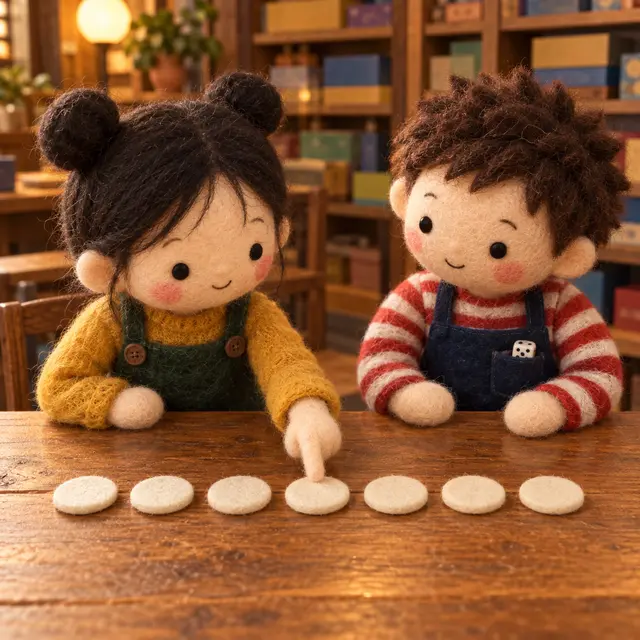
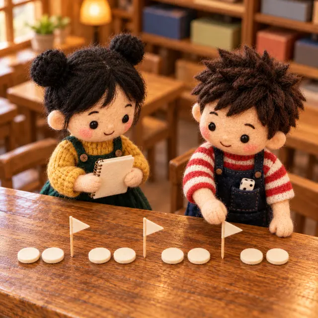
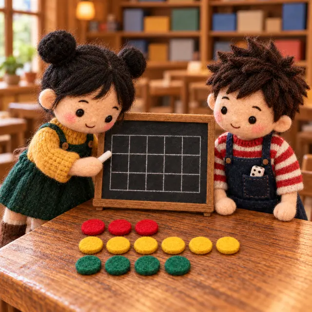
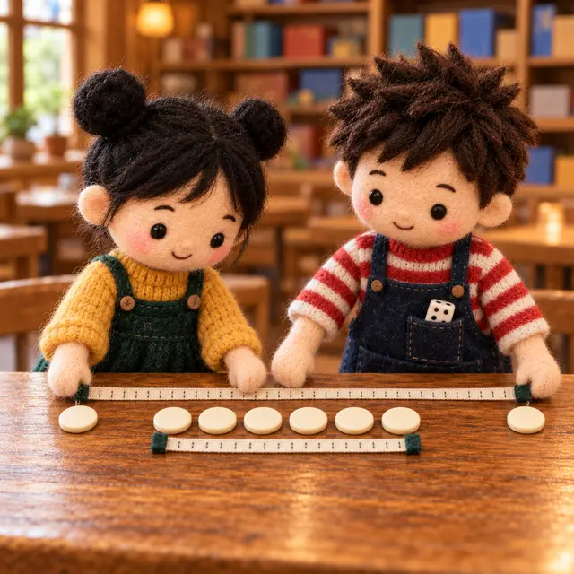
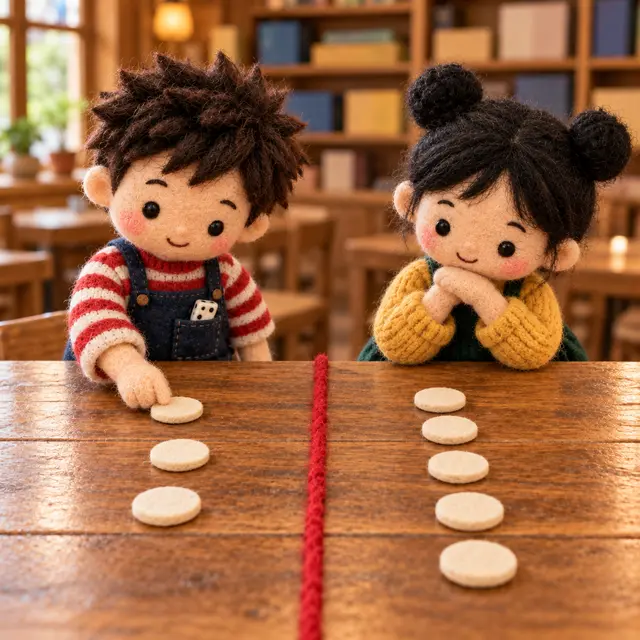

課前暖身漫畫：平均一樣，就是一樣強嗎？
桌遊比賽結束，阿骰算出甲、乙兩班的平均分一樣，宣布「兩班一樣強」。小棋把兩班每個人的得分籌碼排在桌上一看：一班擠在中間，一班散得很開——只看平均，看得出這種差別嗎？
重點 1：中位數——用 \(N \times \frac{1}{2}\) 找位置
重點整理與敘述
- 七年級學過：把 \(N\) 個資料由小到大排好，\(N\) 是奇數時取最中間那一個，\(N\) 是偶數時取最中間兩個的平均。
- 新的算法：先算 \(N \times \frac{1}{2} = a\)。
- \(a\) 是整數：取第 \(a\)、第 \(a + 1\) 個資料的平均。
- \(a\) 不是整數：取 \(a\) 的整數部分再加 \(1\)，得到 \(b\)，取第 \(b\) 個資料。
- 例：\(11\) 個資料，\(11 \times \frac{1}{2} = 5.5\)，取第 \(6\) 個；\(16\) 個資料，\(16 \times \frac{1}{2} = 8\)，取第 \(8\)、\(9\) 個的平均。
- 中位數的意義：小於或等於中位數的資料至少占 \(\frac{1}{2}\)，大於或等於中位數的資料也至少占 \(\frac{1}{2}\)。中位數自己兩邊都算，同分的資料也會讓比例超過一半。
不是整數取「整數部分 \(+ 1\)」那一個

視覺互動探索：中位數排隊台
拉動「人數 \(N\)」，看 \(N \times \frac{1}{2}\) 是不是整數、中位數取哪一個或哪兩個；黃色帶是小於或等於中位數的、綠色帶是大於或等於中位數的。切到「乙桌」看同分會讓比例變成多少。
形成性評量 (中位數)
Q1. 九位玩家的得分由小到大為 \(12\), \(15\), \(15\), \(18\), \(21\), \(24\), \(26\), \(30\), \(33\)。小於或等於中位數的資料，占全部資料的比例為何？
解析：答案為 C。\(9 \times \frac{1}{2} = 4.5\) 不是整數，取第 \(5\) 個，中位數是 \(21\)。小於或等於 \(21\) 的有 \(12, 15, 15, 18, 21\) 共 \(5\) 個，占 \(\frac{5}{9}\)。
A 錯：\(\frac{4}{9}\) 只算了「小於」\(21\) 的，漏掉中位數自己。
B 錯：比例不一定剛好一半；資料個數是奇數時，中位數兩邊都算，一定超過一半。
D 錯：把 \(4.5\) 進位成 \(5\) 之後又再加 \(1\)，取到第 \(6\) 個 \(24\)，得 \(\frac{6}{9} = \frac{2}{3}\)。
Q2. 十位玩家的得分由小到大為 \(8\), \(11\), \(13\), \(13\), \(16\), \(20\), \(22\), \(25\), \(27\), \(31\)。這群資料的中位數是多少？
解析：答案為 B。\(10 \times \frac{1}{2} = 5\) 是整數，取第 \(5\)、\(6\) 個的平均：\(\frac{16 + 20}{2} = 18\)。
A 錯：\(16\) 只取了第 \(5\) 個；\(a\) 是整數時要取第 \(a\)、\(a + 1\) 兩個的平均。
C 錯：\(20\) 是第 \(6\) 個，同樣只取了一個。
D 錯：\(18.6\) 是十個數的總和 \(186\) 除以 \(10\)，那是平均數，不是中位數。
重點 2：四分位數——把資料切成四等分
重點整理與敘述
- 資料由小到大排好後，把整體分成 \(4\) 等分，三個等分點依序叫第 1、第 2、第 3 四分位數，記作 \(Q_1\)、\(Q_2\)、\(Q_3\)。
- 算法（\(k = 1, 2, 3\)）：令 \(N \times \frac{k}{4} = a\)。
- \(a\) 是整數：取第 \(a\)、第 \(a + 1\) 個的平均當作 \(Q_k\)。
- \(a\) 不是整數：取 \(a\) 的整數部分再加 \(1\)，得到 \(b\)，取第 \(b\) 個當作 \(Q_k\)。
- \(Q_2\) 的算法就是 \(N \times \frac{1}{2}\)，所以 \(Q_2\) 就是中位數。
- 一定要先排序：資料若是照報名、出場順序記下來的，要先由小到大排好才能數位置。
- 例：\(13\) 個資料，\(13 \times \frac{1}{4} = 3.25\)，\(Q_1\) 取第 \(4\) 個；\(13 \times \frac{3}{4} = 9.75\)，\(Q_3\) 取第 \(10\) 個。
\(a\) 是整數：第 \(a\)、\(a + 1\) 個的平均；不是整數：第「整數部分 \(+ 1\)」個

視覺互動探索：四分位數定位器
選 \(Q_1\)、\(Q_2\) 或 \(Q_3\)，拉動「人數 \(N\)」，看 \(N \times \frac{k}{4}\) 的結果怎麼決定取哪一個。切到「報名順序」，看沒排序就直接數會拿到什麼。
形成性評量 (四分位數的算法)
Q3. \(14\) 位玩家的得分由小到大為 \(5\), \(7\), \(8\), \(10\), \(12\), \(12\), \(15\), \(17\), \(18\), \(20\), \(23\), \(24\), \(26\), \(29\)。這群資料的 \(Q_1\) 是多少？
解析：答案為 C。\(14 \times \frac{1}{4} = 3.5\) 不是整數，取整數部分 \(3\) 再加 \(1\)，取第 \(4\) 個，\(Q_1 = 10\)。
A 錯：\(8\) 是第 \(3\) 個，只取了整數部分、忘了加 \(1\)。
B 錯：\(\frac{8 + 10}{2} = 9\) 是把 \(3.5\) 當成整數那種情形，取了第 \(3\)、\(4\) 個的平均。
D 錯：\(12\) 是第 \(5\) 個，把 \(3.5\) 先進位成 \(4\) 又再加 \(1\)。
Q4. 桌遊社依報名順序記下 \(11\) 位社員的得分：\(36\), \(19\), \(28\), \(43\), \(23\), \(31\), \(16\), \(40\), \(26\), \(47\), \(30\)。這群資料的 \(Q_3\) 是多少？
解析：答案為 A。先排序：\(16\), \(19\), \(23\), \(26\), \(28\), \(30\), \(31\), \(36\), \(40\), \(43\), \(47\)。\(11 \times \frac{3}{4} = 8.25\) 不是整數，取第 \(9\) 個，\(Q_3 = 40\)。
B 錯：沒有排序，直接數報名順序的第 \(9\) 個，拿到 \(26\)。
C 錯：\(\frac{36 + 40}{2} = 38\) 是取第 \(8\)、\(9\) 個的平均；\(8.25\) 不是整數，不取平均。
D 錯：\(43\) 是第 \(10\) 個，多數了一個。
重點 3：四分位數的相對位置——「至少」\(\frac{k}{4}\)
重點整理與敘述
- 和中位數一樣，四分位數告訴我們一個數在整群資料裡的相對位置：
- 小於或等於 \(Q_1\) 的資料至少占 \(\frac{1}{4}\)，大於或等於 \(Q_1\) 的至少占 \(\frac{3}{4}\)。
- 小於或等於 \(Q_3\) 的資料至少占 \(\frac{3}{4}\)，大於或等於 \(Q_3\) 的至少占 \(\frac{1}{4}\)。
- 為什麼是「至少」而不是「剛好」？因為位置要進位，而且同分的資料會卡在 \(Q_k\) 上、兩邊都算進去，比例就會超過 \(\frac{k}{4}\)。
- 反過來說，小於 \(Q_1\) 的資料至多占 \(\frac{1}{4}\)，大於 \(Q_3\) 的資料至多占 \(\frac{1}{4}\)。重點 10、11 推估人數就是用這兩句話。
視覺互動探索：同分的籌碼
選一個四分位數，調整資料個數與「同分幾筆」：同分的籌碼會集中在 \(Q_k\) 的位置附近。看看小於或等於 \(Q_k\) 的比例怎麼從 \(\frac{k}{4}\) 開始往上長。
形成性評量 (四分位數的相對位置)
Q5. 某桌遊社 \(24\) 位社員得分的 \(Q_1 = 40\) 分。下列敘述何者一定正確？
解析：答案為 B。小於或等於 \(Q_1\) 的資料至少占 \(\frac{1}{4}\)，\(24 \times \frac{1}{4} = 6\)，所以至少 \(6\) 人小於或等於 \(40\) 分。
A、D 錯：有同分時，\(40\) 分的人可能不只一兩個，低於、高於 \(40\) 分的人數都不一定剛好是 \(6\)、\(18\)。
C 錯：方向反了；同分多的時候，小於或等於 \(40\) 分的人可能超過 \(6\) 人。
Q6. \(12\) 個資料由小到大為 \(3\), \(5\), \(6\), \(6\), \(6\), \(6\), \(8\), \(9\), \(10\), \(12\), \(13\), \(15\)。小於或等於 \(Q_1\) 的資料占全部的比例為何？
解析：答案為 C。\(12 \times \frac{1}{4} = 3\) 是整數，\(Q_1 = \frac{6 + 6}{2} = 6\)。小於或等於 \(6\) 的有 \(3\), \(5\), \(6\), \(6\), \(6\), \(6\) 共 \(6\) 個，占 \(\frac{6}{12} = \frac{1}{2}\)——四個 \(6\) 同分，所以遠超過 \(\frac{1}{4}\)。
A 錯：\(\frac{1}{4}\) 只是「至少」的下限，不是實際的比例。
B 錯：\(\frac{4}{12} = \frac{1}{3}\) 只數到第 \(4\) 個，漏了後面兩個同分的 \(6\)。
D 錯：\(\frac{2}{12} = \frac{1}{6}\) 只算了「小於」\(6\) 的。
重點 4：次數分配表求四分位數——累積次數找位置
重點整理與敘述
- 次數分配表的值本來就由小到大排好了，不必再排序；總人數 \(N\) 是次數的總和。
- 用 \(N \times \frac{k}{4}\) 算出要第幾個，再把次數一路累加：累積次數第一次達到或超過那個位置的那一欄，就是答案。
- 例：值 \(2, 4, 6, 8\) 的次數依序為 \(3, 5, 4, 4\)，共 \(16\) 人，累積次數 \(3, 8, 12, 16\)。\(16 \times \frac{1}{4} = 4\)，取第 \(4\)、\(5\) 個；兩個都在累積到 \(8\) 的那一欄，都是 \(4\)，所以 \(Q_1 = \frac{4 + 4}{2} = 4\)。
- 整數情形的兩個位置可能落在不同的欄，這時要取兩個不同值的平均，答案會是表上沒有的數。

視覺互動探索：累積次數尋寶
選一張次數分配表與要找的四分位數。下方的色條把 \(N\) 個人依序排開，每一色是一欄、分界上的數是累積次數；金色箭頭指出要找的那一個人。
形成性評量 (次數分配表求四分位數)
Q7. 下表是某次桌遊比賽每位玩家拿到的寶石數。寶石數的 \(Q_3\) 是多少顆？
| 寶石（顆） | \(2\) | \(3\) | \(4\) | \(5\) | \(6\) | \(7\) |
|---|---|---|---|---|---|---|
| 次數（人） | \(3\) | \(5\) | \(6\) | \(4\) | \(5\) | \(1\) |
解析：答案為 D。共 \(3 + 5 + 6 + 4 + 5 + 1 = 24\) 人，\(24 \times \frac{3}{4} = 18\) 是整數，取第 \(18\)、\(19\) 個的平均。累積次數依序為 \(3\), \(8\), \(14\), \(18\), \(23\), \(24\)：第 \(18\) 個是 \(5\)、第 \(19\) 個是 \(6\)，所以 \(Q_3 = \frac{5 + 6}{2} = 5.5\)。
A 錯：只取了第 \(18\) 個。
B 錯：只取了第 \(19\) 個。
C 錯：\(4.25\) 是平均數 \(\frac{102}{24}\)，不是四分位數。
Q8. 下表是 \(26\) 位玩家完成一局桌遊所用的回合數。回合數的 \(Q_1\)、\(Q_2\) 分別是多少？
| 回合數 | \(4\) | \(5\) | \(6\) | \(7\) | \(8\) | \(9\) |
|---|---|---|---|---|---|---|
| 次數（人） | \(2\) | \(4\) | \(5\) | \(7\) | \(5\) | \(3\) |
解析：答案為 A。累積次數依序為 \(2\), \(6\), \(11\), \(18\), \(23\), \(26\)。
\(26 \times \frac{1}{4} = 6.5\) 不是整數，取第 \(7\) 個：累積 \(6 \lt 7 \le 11\)，是 \(6\)，所以 \(Q_1 = 6\)。
\(26 \times \frac{1}{2} = 13\) 是整數，取第 \(13\)、\(14\) 個：累積 \(11 \lt 13\)、\(14 \le 18\)，都是 \(7\)，所以 \(Q_2 = 7\)。
B 錯：\(5\) 是第 \(6\) 個，忘了「整數部分再加 \(1\)」。
C 錯：\(5.5\) 是把 \(6.5\) 當成整數情形，取第 \(6\)、\(7\) 個的平均。
D 錯：\(8\) 是 \(Q_3\)（\(26 \times \frac{3}{4} = 19.5\)，第 \(20\) 個）。
重點 5：次數分配直方圖——四分位數在哪一組
重點整理與敘述
- 直方圖的資料已經分組，只看得出每一組有幾人，看不出確切的數值，所以只能問「\(Q_k\) 在哪一組」。
- 作法和次數分配表相同：先把各組次數加起來得到 \(N\)，算 \(N \times \frac{k}{4}\) 決定要第幾個人，再由左往右累加各組次數，看那個人落在哪一組。
- 分組的規則沿用七年級：每一組包含下限、不包含上限，例如 \(20\)～\(30\) 分包含 \(20\) 分、不包含 \(30\) 分。
- 整數情形要看兩個人：兩個人在同一組，\(Q_k\) 就在那一組；若剛好跨在兩組的分界，只看直方圖判斷不出來。
視覺互動探索：直方圖找組別
選要找的四分位數，拉動「\(20\)～\(30\) 分這一組的人數」：總人數會跟著變，要找的那一個人也會換到別的位置。柱子下方是由左往右的累積次數。
形成性評量 (直方圖的四分位數)
Q9. 下圖是某次桌遊比賽得分的次數分配直方圖。得分的 \(Q_3\) 在哪一組？
解析：答案為 B。共 \(2 + 5 + 9 + 8 + 4 + 2 = 30\) 人，\(30 \times \frac{3}{4} = 22.5\)，取第 \(23\) 個。累積次數 \(2, 7, 16, 24\)：\(16 \lt 23 \le 24\)，第 \(23\) 個在 \(30\)～\(40\) 分這一組。
A 錯：\(20\)～\(30\) 分是 \(Q_2\) 所在的組（第 \(15\)、\(16\) 個）。
C 錯：累積到 \(30\)～\(40\) 分已經有 \(24\) 人，第 \(23\) 個還輪不到下一組。
D 錯：最後一組是最大值所在的組，不是 \(Q_3\)。
Q10. 下圖是某班數學小考成績的次數分配直方圖。全班人數與 \(Q_1\) 所在的組別分別為何？
解析：答案為 D。全班 \(3 + 7 + 10 + 9 + 5 + 2 = 36\) 人，\(36 \times \frac{1}{4} = 9\) 是整數，看第 \(9\)、\(10\) 個。累積次數 \(3, 10\)：第 \(9\)、\(10\) 個都在 \(50\)～\(60\) 分這一組。
A 錯：\(60\)～\(70\) 分是人數最多的一組，但四分位數看的是位置，不是哪一組最多人。
B 錯：人數加錯了，\(3 + 7 + 10 + 9 + 5 + 2 = 36\)。
C 錯：第一組只有 \(3\) 人，第 \(9\) 個人已經在第二組。
重點 6：盒狀圖——用五個數畫出分布
重點整理與敘述
- 知道一群資料的五個數：最小值、\(Q_1\)、\(Q_2\)、\(Q_3\)、最大值，就能畫出盒狀圖。
- 畫法四步驟：
- ❶ 畫出橫軸，標上適當的單位與刻度。
- ❷ 在最小值、\(Q_2\)、最大值的上方各畫一條直線段。
- ❸ 以 \(Q_2\) 線段的長度當寬、\(Q_1\) 到 \(Q_3\) 的長度當長，畫出長方形。
- ❹ 畫橫線連接「最小值、\(Q_1\)」與「\(Q_3\)、最大值」。
- 盒狀圖的位置與長度都照刻度畫：盒子短代表中間一半的資料擠在一起，不代表人數少——盒子左右、兩條橫線各管大約 \(\frac{1}{4}\) 的資料。
- 盒狀圖也可以畫成鉛直的，讀法一樣。
盒子是 \(Q_1\) 到 \(Q_3\)，盒內直線是 \(Q_2\)
視覺互動探索：盒狀圖組裝台
上方的點圖是每一位玩家的得分。選一桌的資料，拉動「步驟」從 ❶ 走到 ❹，看盒狀圖怎麼一步一步由五個數組裝起來。
形成性評量 (盒狀圖的畫法)
Q11. \(13\) 個資料由小到大為 \(4\), \(6\), \(7\), \(8\), \(9\), \(10\), \(12\), \(13\), \(14\), \(15\), \(18\), \(20\), \(26\)。畫這群資料的盒狀圖時，盒子的左邊、盒內的直線、盒子的右邊依序在哪三個數？
解析：答案為 A。盒子從 \(Q_1\) 到 \(Q_3\)，盒內直線是 \(Q_2\)：
\[\begin{aligned} & 13 \times \frac{1}{4} = 3.25 \Rightarrow Q_1 = \text{第 } 4 \text{ 個} = 8 \\ & 13 \times \frac{1}{2} = 6.5 \Rightarrow Q_2 = \text{第 } 7 \text{ 個} = 12 \\ & 13 \times \frac{3}{4} = 9.75 \Rightarrow Q_3 = \text{第 } 10 \text{ 個} = 15 \end{aligned}\]
B 錯：\(Q_1\)、\(Q_3\) 只取了整數部分（第 \(3\)、\(9\) 個），忘了加 \(1\)。
C 錯：把三個位置都當成整數情形取平均（第 \(3\)、\(4\) 個；第 \(6\)、\(7\) 個；第 \(9\)、\(10\) 個）。
D 錯：盒內直線取了第 \(6\) 個 \(10\)；\(6.5\) 要取第 \(7\) 個。
Q12. 下圖是某桌遊社社員得分的盒狀圖。下列敘述何者正確？
解析：答案為 D。小於 \(Q_1 = 31\) 的至多占 \(\frac{1}{4}\)、大於 \(Q_3 = 53\) 的也至多占 \(\frac{1}{4}\)，所以 \(31\) 到 \(53\) 分之間（含）的至少占 \(1 - \frac{1}{4} - \frac{1}{4} = \frac{1}{2}\)。
A 錯：中位數是盒內直線 \(37\)，不是最小值與最大值的平均。
B 錯：盒子從 \(Q_1\) 到 \(Q_3\)，長度是四分位距；全距是整張圖從最左到最右。
C 錯：盒子的左、右半段各管大約 \(\frac{1}{4}\) 的資料；左半段短代表那些分數擠在一起，不是人比較少。
重點 7：全距與四分位距——資料有多分散
重點整理與敘述
- 全距＝最大值－最小值：全部資料分布的範圍。
- 四分位距＝\(Q_3 - Q_1\)：去掉頭尾各 \(\frac{1}{4}\) 之後，中間一半資料分布的範圍；在盒狀圖上就是盒子的長度。
- 例：最高分 \(95\)、最低分 \(32\)、\(Q_1 = 45\)、\(Q_3 = 78\)，全距 \(95 - 32 = 63\)，四分位距 \(78 - 45 = 33\)。
- 通常全距愈大，資料愈分散；四分位距愈小，中間一半的資料愈集中在中位數附近。
- 從次數分配表求四分位距：先照重點 4 求出 \(Q_1\)、\(Q_3\) 再相減，不是拿次數欄的數字相減。

視覺互動探索：五個數調整台
分別拉動最小值、\(Q_1\)、\(Q_2\)、\(Q_3\)、最大值，看全距（金色）與四分位距（橘色）兩把尺怎麼變。五個數的大小順序被打亂時，畫面會告訴你為什麼不成立。
形成性評量 (全距與四分位距)
Q13. 下表是 \(30\) 位學生桌遊推理賽的分數。分數的全距與四分位距分別是多少？
| 分數（分） | 次數（人） |
|---|---|
| \(60\) | \(2\) |
| \(65\) | \(3\) |
| \(70\) | \(6\) |
| \(75\) | \(8\) |
| \(80\) | \(5\) |
| \(85\) | \(4\) |
| \(90\) | \(2\) |
解析：答案為 C。全距 \(= 90 - 60 = 30\)。累積次數 \(2\), \(5\), \(11\), \(19\), \(24\), \(28\), \(30\)：
\[\begin{aligned} & 30 \times \frac{1}{4} = 7.5 \Rightarrow \text{第 } 8 \text{ 個} \Rightarrow Q_1 = 70 \\ & 30 \times \frac{3}{4} = 22.5 \Rightarrow \text{第 } 23 \text{ 個} \Rightarrow Q_3 = 80 \end{aligned}\]
四分位距 \(= 80 - 70 = 10\)。
A 錯：\(90 - 70 = 20\) 是拿最大值減 \(Q_1\)。
B 錯：\(8 - 2 = 6\) 是拿次數欄相減；全距要用分數。
D 錯：\(2\) 是拿次數欄的數字相減，四分位距要用分數。
Q14. 某次桌遊大賽的積分：最低 \(120\) 分、\(Q_1 = 185\) 分、\(Q_2 = 230\) 分、\(Q_3 = 262\) 分、最高 \(340\) 分。積分的四分位距是多少分？
解析：答案為 A。四分位距 \(= Q_3 - Q_1 = 262 - 185 = 77\)。
B 錯：\(340 - 120 = 220\) 是全距。
C 錯：\(262 - 230 = 32\) 是 \(Q_3 - Q_2\)，只有盒子的右半段。
D 錯：\(230 - 185 = 45\) 是 \(Q_2 - Q_1\)，只有盒子的左半段。
重點 8：一個極端值——全距與四分位距誰比較穩
重點整理與敘述
- 全距只用到最大值與最小值兩筆資料，只要有一個特別大或特別小的值（極端值），全距就會被拉得很大。
- 四分位距去掉頭尾各 \(\frac{1}{4}\) 的資料，只看中間一半，幾乎不受極端值影響。
- 所以資料裡有極端值時，用四分位距描述分散程度比全距合適。
- 反過來讀：「全距很大、四分位距很小」代表中間一半的資料很集中，但有少數特別高或特別低的值。
視覺互動探索：拉走一顆籌碼
\(12\) 位玩家的得分中，紅色兩顆是最低分與最高分。拉動兩支滑桿把它們拉遠，對照下方兩根長條：全距一直變，四分位距卻動也不動。
形成性評量 (極端值)
Q15. 某桌 \(12\) 位玩家的得分中，最高分 \(48\) 分其實記錯了，應該是 \(130\) 分，其餘的分數都正確。改正後，得分的全距與四分位距會怎麼變？
解析：答案為 B。最高分從 \(48\) 改成 \(130\)，最小值不變，全距多了 \(130 - 48 = 82\) 分。\(12 \times \frac{1}{4} = 3\)、\(12 \times \frac{3}{4} = 9\)，\(Q_1\) 由第 \(3\)、\(4\) 個決定，\(Q_3\) 由第 \(9\)、\(10\) 個決定；改的是第 \(12\) 個，改完仍是最大的那一個，\(Q_1\)、\(Q_3\) 都不變，四分位距也不變。
A、C 錯：第 \(12\) 個不影響 \(Q_1\)、\(Q_3\)，四分位距不會變。
D 錯：全距用到的就是最大值，最大值變了，全距一定跟著變。
Q16. 某桌遊社社員得分的全距是 \(60\) 分，四分位距只有 \(8\) 分。下列推論何者最合理？
解析：答案為 D。四分位距 \(8\) 分代表中間一半的人擠在 \(8\) 分的範圍裡；全距卻有 \(60\) 分，代表頭尾有少數人離得很遠。
A 錯：中間一半很集中，不是全部都分散。
B 錯：中間一半的範圍是四分位距 \(8\) 分，\(60\) 分是全距。
C 錯：四分位距與全距沒有固定的倍數關係。
重點 9：用盒狀圖比較兩群資料
重點整理與敘述
- 把兩班的盒狀圖畫在同一條刻度上，就能一眼比較：
- 中位數：看盒內那一條直線的位置，愈右邊中間的分數愈高。
- 全距：看整張圖從最左端到最右端多長，愈長代表全部分數的分布範圍愈廣。
- 四分位距：只看盒子多長，不看兩條橫線；盒子愈長，中間一半的分數愈分散。
- 例：甲班最小值 \(40\)、\(Q_1 = 60\)、\(Q_3 = 89\)、最大值 \(100\)；乙班 \(42\)、\(50\)、\(75\)、\(88\)。甲班全距 \(60\)、四分位距 \(29\)，乙班全距 \(46\)、四分位距 \(25\)，兩項都是甲班比較大。
視覺互動探索：兩班對照板
選一組兩班的盒狀圖，再選要比較中位數、全距還是四分位距：畫面會把要看的地方標成金色。試著先自己猜哪一班比較大，再看畫面。
形成性評量 (比較兩群資料)
Q17. 下圖是甲、乙兩班桌遊比賽得分的盒狀圖。若甲、乙兩班的中位數分別為 \(a\)、\(b\)，四分位距分別為 \(c\)、\(d\)，下列何者正確？
解析：答案為 C。中位數看盒內直線：\(a = 55\)、\(b = 52\)，\(a \gt b\)。四分位距看盒子：\(c = 70 - 38 = 32\)、\(d = 62 - 45 = 17\)，\(c \gt d\)。
A、B 錯：甲班盒內直線在 \(55\)，比乙班的 \(52\) 右邊，\(a \gt b\)。
D 錯：甲班的盒子比乙班長，\(c \gt d\)。
Q18. 下圖是某班四次桌遊積分賽成績的盒狀圖。哪一次成績的四分位距最大？
解析：答案為 A。四分位距是盒子的長度：第一次 \(70 - 40 = 30\)、第二次 \(85 - 45 = 40\)、第三次 \(80 - 50 = 30\)、第四次 \(70 - 35 = 35\)，第二次最大。
B 錯：第一次的盒子只有 \(30\)。
C 錯：第三次整張圖最長（全距 \(90\)），但題目問的是四分位距，只看盒子。
D 錯：第四次的盒子是 \(35\)，比第二次短。
重點 10：由盒狀圖推估人數——「至少」與「至多」
重點整理與敘述
- 盒狀圖只有五個數，看不到每一個人，所以人數通常只能說至少或至多。
- 用重點 3 的兩句話：至少 \(\frac{k}{4}\) 的人小於或等於 \(Q_k\)；至多 \(\frac{k}{4}\) 的人小於 \(Q_k\)。
- 例（全班 \(40\) 人、未滿 \(60\) 分為不及格）：
- 若 \(Q_1 = 60\)：低於 \(60\) 分的至多 \(40 \times \frac{1}{4} = 10\) 人。
- 若 \(Q_2 = 58\)：\(58\) 分以下（含）的至少 \(40 \times \frac{1}{2} = 20\) 人，所以不及格的至少 \(20\) 人。
- 比較兩班：甲班的 \(Q_3\) 比乙班的最高分還高，就能確定甲班至少 \(\frac{1}{4}\) 的人高於乙班的最高分。

視覺互動探索：門檻線推估器
拉動紅色門檻線 \(t\)，選全班人數與要問「低於 \(t\) 分」還是「\(t\) 分以上（含）」：畫面會說出用到盒狀圖的哪兩個點，以及人數至少、至多是多少。
形成性評量 (推估人數)
Q19. 下圖是某班 \(36\) 人數學小考成績的盒狀圖（紅色虛線是 \(60\) 分）。未滿 \(60\) 分為不及格，關於不及格的人數，下列何者一定正確？
解析：答案為 B。\(Q_1 = 62\) 比 \(60\) 高，小於 \(Q_1\) 的至多占 \(\frac{1}{4}\)，所以低於 \(60\) 分的至多 \(36 \times \frac{1}{4} = 9\) 人。
A、C 錯：\(41\) 到 \(62\) 之間到底有多少人低於 \(60\)，盒狀圖看不出來，可能少於 \(9\) 人。
D 錯：\(Q_2 = 70\)，至少一半的人有 \(70\) 分以上（含），不及格的不可能到 \(18\) 人。
Q20. 下圖是甲、乙兩班（各 \(40\) 人）桌遊比賽得分的盒狀圖。關於甲班得分高於乙班最高分的人數，下列何者一定正確？
解析：答案為 C。乙班最高分是 \(80\) 分；甲班 \(Q_3 = 84\) 比 \(80\) 高，而大於或等於 \(Q_3\) 的至少占 \(\frac{1}{4}\)，所以甲班高於 \(80\) 分的至少 \(40 \times \frac{1}{4} = 10\) 人。
A 錯：甲班 \(Q_1 = 63\) 比 \(80\) 低，看不出有 \(\frac{3}{4}\) 的人高於 \(80\)。
B 錯：甲班 \(Q_2 = 72\) 也比 \(80\) 低，看不出有一半的人高於 \(80\)。
D 錯：\(72\) 到 \(84\) 之間也可能有人高於 \(80\)，人數可能超過 \(10\)。
重點 11：同一個分數，在哪裡排名比較好
重點整理與敘述
- 同樣的分數，放在不同的群體裡，名次可能差很多：要看這個分數落在那一群的盒狀圖的哪裡。
- 分數低於 \(Q_1\)：至少 \(\frac{3}{4}\) 的人比你高，排在後段。
- 分數高於 \(Q_2\)：比你高的至多一半；高於 \(Q_3\)：比你高的至多 \(\frac{1}{4}\)。
- 兩群人數相同時，比你高的人「至少幾人」比另一群「至多幾人」還多，才能確定你在這一群排名比較差；範圍重疊就判斷不出來。
- 例：國文、數學的 \(Q_2\) 都是 \(70\)、英語的 \(Q_2\) 是 \(75\)，三科都考 \(73\) 分：國文、數學至少贏過一半的人，英語卻有一半以上的人比你高，所以英語排名最差。
視覺互動探索：三種桌遊排名比一比
三種桌遊各有 \(40\) 人參加。拉動小棋的分數，看在每一種桌遊裡「比她高的人」至少、至多幾人，以及能不能確定哪一種排名最差。
形成性評量 (判斷排名)
Q21. 下圖是三種桌遊比賽（各 \(40\) 人參加）得分的盒狀圖。小棋三種都得到 \(68\) 分（紅色虛線），她在哪一種比賽的排名一定最差？
解析：答案為 D。推理的 \(Q_1 = 70\) 比 \(68\) 高，至少 \(\frac{3}{4}\)，也就是至少 \(30\) 人比她高。卡牌的 \(Q_3 = 75\) 比 \(68\) 高、\(Q_2 = 62\) 比 \(68\) 低，比她高的至少 \(10\) 人、至多 \(20\) 人；拼字的 \(Q_3 = 64\) 比 \(68\) 低，比她高的至多 \(10\) 人。推理至少 \(30\) 人，比另外兩種的上限都多，所以推理一定最差。
A 錯：拼字是她排名最好的一種。
B 錯：卡牌比她高的至多 \(20\) 人，少於推理。
C 錯：分數相同，名次不一定相同，要看分數在各自盒狀圖的位置。
Q22. 下圖是甲、乙兩班（各 \(40\) 人）桌遊比賽得分的盒狀圖。甲班的小棋和乙班的阿骰都得到 \(80\) 分（紅色虛線）。下列敘述何者正確？
解析：答案為 A。甲班 \(Q_3 = 78\) 比 \(80\) 低，大於 \(Q_3\) 的至多 \(\frac{1}{4}\)，比小棋高的至多 \(10\) 人；乙班 \(Q_2 = 82\) 比 \(80\) 高，大於或等於 \(Q_2\) 的至少一半，比阿骰高的至少 \(20\) 人。所以小棋的名次一定比較好。
B 錯：同分不同班，前面的人數不同，名次就不同。
C 錯：方向反了。
D 錯：兩個範圍（至多 \(10\) 人、至少 \(20\) 人）沒有重疊，可以確定。
小節總結與核心回顧
資料分析速查表
- 四分位數：排序後令 \(N \times \frac{k}{4} = a\)；整數取第 \(a\)、\(a + 1\) 個的平均，不是整數取「整數部分 \(+ 1\)」那一個。\(Q_2\) 就是中位數。
- 相對位置：至少 \(\frac{k}{4}\) 的資料 \(\le Q_k\)，至少 \(1 - \frac{k}{4}\) 的資料 \(\ge Q_k\)。
- 次數分配表、直方圖：用累積次數找出第幾個人；直方圖只問在哪一組。
- 盒狀圖：最小值、\(Q_1\)、\(Q_2\)、\(Q_3\)、最大值；盒子是 \(Q_1\) 到 \(Q_3\)。
- 全距＝最大值－最小值；四分位距＝\(Q_3 - Q_1\)，不受極端值影響。
- 推估：人數與排名常常只能說「至少」「至多」。
回到桌遊咖啡館：兩班真的一樣強嗎？
平均一樣，盒子不一樣
阿骰說兩班平均一樣、一樣強。小棋把兩班的得分畫成盒狀圖：甲班的盒子又短又集中，乙班的盒子很長，而且有人特別高、有人特別低——兩班的分布完全不同。
用數字說清楚
甲班的四分位距小，中間一半的人實力相近；乙班的全距大，強的很強、弱的很弱。要派代表隊時，看的不只是平均，還有這些描述分散程度的數。
下一步
下一節回到同一間桌遊咖啡館，擲骰子、抽卡牌——學習怎麼計算一件事發生的機率。